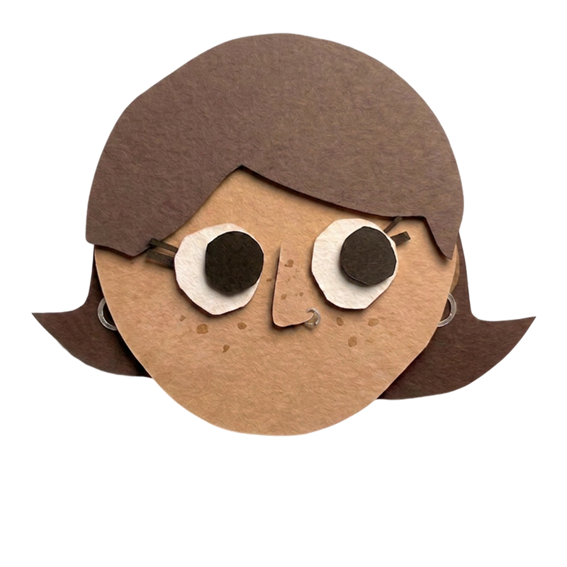

<!DOCTYPE html>
<html lang="it">
<head>
<meta charset="UTF-8">
<title>CV - Caterina Maria Cozzoli</title>
<link href="https://fonts.googleapis.com/css2?family=Onest:wght@300;400;500;600;700;800&display=swap" rel="stylesheet" />

<style>
  @font-face {
    font-family: 'Chunko';
    src: url('../public/fonts/Chunko-Bold.otf') format('opentype');
    font-weight: normal;
    font-style: normal;
  }

  :root {
    --primary: #7A35EE;
    --primary-light: #EFE9FF;
    --primary-button: #5E18D1;
    --accent: #FED728;
    --bg: #FDFBF7;
    --ink: #111418;
    --ink-muted: #5B6168;
    --border: #E5E5E5;
    --font-heading: 'Chunko', sans-serif;
    --font-body: 'Onest', system-ui, sans-serif;
  }
  
  body {
    margin: 0;
    font-family: var(--font-body);
    background-color: #2c2740;
    color: var(--ink);
    display: flex;
    justify-content: center;
    padding: 40px 0;
  }

  .page { 
    width: 794px; height: 1123px; margin: 0 auto; overflow: hidden; position: relative;
    background-color: var(--bg);
    background-image: url('../public/images/textures/carta\\ acquarello.jpg');
    background-size: cover;
    background-blend-mode: multiply;
    box-shadow: 0 4px 12px rgba(0,0,0,0.1);
  }

  @media print {
    @page { size: A4; margin: 0; }
    body { padding: 0; background: #fff !important; -webkit-print-color-adjust: exact !important; print-color-adjust: exact !important; color-adjust: exact !important; }
    * { -webkit-print-color-adjust: exact !important; print-color-adjust: exact !important; color-adjust: exact !important; }
    .controls { display: none !important; }
    .page { box-shadow: none !important; margin: 0 !important; }
  }

  .controls {
    position: fixed; top: 0; left: 0; right: 0;
    background: #fff; padding: 12px 24px; border-bottom: 3px solid var(--ink);
    display: flex; gap: 20px; z-index: 1000;
    align-items: center; justify-content: center;
    font-family: var(--font-body); font-size: 14px; font-weight: 700;
  }
  select {
    padding: 8px 12px; border-radius: 6px; border: 2px solid var(--ink);
    font-family: var(--font-body); outline: none; cursor: pointer; font-weight: 600;
  }

  /* CONTENITORE PRINCIPALE A4 */
  .page {
    width: 210mm;
    min-height: 297mm;
    background-color: var(--bg);
    margin: 0 auto;
    position: relative;
    overflow: hidden;
    border: none;
    box-shadow: 0 4px 20px rgba(0,0,0,0.05); 
  }
  .page * { box-sizing: border-box; }

  h1, h2, h3 { font-family: var(--font-heading); margin: 0; font-weight: normal; letter-spacing: 0.02em; line-height:1.1; }
  p { margin: 0; line-height: 1.4; }
  a { color: inherit; text-decoration: underline; text-underline-offset: 2px; text-decoration-thickness: 2px; }
  ul { margin: 0; padding: 0; list-style: none; }
  
  .avatar-img { object-fit: cover; border-radius: 8px; position: relative; z-index: 2; width: 100%; max-width: 150px; margin-bottom: 24px; display: block; transform: rotate(4deg); }
  
  /* TAGS & LABELS */
  .tag { 
    font-family: var(--font-body); font-size: 10px; font-weight: 700; color: #fff; 
    background: var(--primary); border-radius: 20px; padding: 3px 10px; display: inline-block; 
    margin-bottom: 0px; text-transform: uppercase; vertical-align: middle;
  }
  
  .section-title { 
    font-size: 22px; text-transform: uppercase; color: var(--ink); margin-bottom: 12px; 
    display: flex; align-items: center; background: var(--accent); padding: 4px 24px 2px; border-radius: 0;
    margin-left: -24px; margin-right: -24px;
  }
  .profile-text { font-size: 12.5px; line-height: 1.4; color: var(--ink); font-weight: 500; }
  
  /* BULLET POINTS CIRCOLARI */
  .bullet-list li { position: relative; padding-left: 16px; font-size: 12.5px; line-height: 1.3; font-weight: 500; color: var(--ink); margin-bottom: 2px; }
  .bullet-list li::before { content: ""; position: absolute; left: 0px; top: 6px; width: 5px; height: 5px; background-color: var(--ink); border-radius: 50%; }
  
  /* SKILLS CHIPS */
  .skills-wrap { display: flex; flex-wrap: wrap; gap: 6px; }
  .skill-chip { padding: 6px 10px; border-radius: 20px; border: 1.5px solid var(--ink); color: var(--ink); font-size: 10.5px; font-weight: 600; display: inline-flex; align-items: center; justify-content: center; text-align: center; }

  /* STRUMENTI (SOLO LOGHI) */
  .tools-wrap { display: grid; grid-template-columns: repeat(5, 1fr); gap: 12px; }
  .tool-icon-only { width: 100%; height: auto; aspect-ratio: 1; object-fit: contain; display: block; }
  
  /* ESPERIENZA E FORMAZIONE */
  .exp-item, .edu-item { margin-bottom: 14px; position:relative; }
  .exp-item .role, .edu-item .role { font-family: var(--font-body); font-weight: 800; font-size: 15px; color: var(--ink); display: inline-block; }
  .exp-item .org, .edu-item .org { font-size: 11.5px; color: var(--ink-muted); font-weight: 700; display: block; margin-bottom: 4px; }
  .exp-item .period { font-size: 9.5px; color: var(--ink-muted); font-weight: 600; text-transform:uppercase; text-align: right; }
  .edu-item .period { font-size: 8px; color: var(--ink-muted); font-weight: 600; text-transform:uppercase; text-align: right; }
  .exp-item .desc, .edu-item .desc { font-size: 10.5px; font-weight: 500; color: var(--ink); line-height: 1.5; margin-top: 2px; }
  .exp-item:last-child, .edu-item:last-child { margin-bottom: 0 !important; }
  
  .proj-item { margin-bottom: 8px; }
  .proj-item .header { display: flex; justify-content: space-between; align-items: baseline; margin-bottom: 4px; }
  .proj-item .name-wrap { display: flex; align-items: center; gap: 8px; }
  .proj-item .name { font-family: var(--font-body); font-weight: 800; font-size: 17px; color: var(--ink); display: inline-block; }
  .proj-item .date { font-size: 11px; font-weight: 600; color: var(--ink-muted); text-transform: uppercase; }
  .proj-item .desc { font-size: 11.5px; font-weight: 500; color: var(--ink); margin-top: 4px; margin-left: 45px; }
  .sticker-logo { width: 33px; height: 33px; background-color: #fff; border-radius: 50%; box-shadow: 1px 2px 5px rgba(0,0,0,0.15), inset 0 0 0 1px rgba(0,0,0,0.05); display: flex; align-items: center; justify-content: center; flex-shrink: 0; border: 3px solid #fff; }
  .sticker-logo img { width: 18px; height: 18px; object-fit: contain; }
  
  .paw { position: absolute; z-index: 10; opacity: 0.9; }
  .sticker { position: absolute; z-index: 15; opacity: 0.9; }

  /* ==============================================================
     1, 2, 3: LAYOUT LINEARI (MINIMAL)
     ============================================================== */
  .v-1 { display: grid; grid-template-columns: 286px 1fr; margin-top: 7px; }
  .v-1 .sidebar { background: transparent; padding: 160px 24px 24px 24px; border-right: 4px solid var(--ink); display: flex; flex-direction: column; gap: 20px; position: relative; }
  .v-1 .main { padding: 24px; display: flex; flex-direction: column; gap: 20px; }

  .v-2 { display: grid; grid-template-columns: 1fr 286px; }
  .v-2 .sidebar { background: transparent; padding: 20px 32px 40px 32px; border-left: 4px solid var(--ink); display: flex; flex-direction: column; gap: 32px; position: relative; }
  .v-2 .main { padding: 20px 32px 40px 32px; display: flex; flex-direction: column; gap: 40px; }

  .v-3 { display: grid; grid-template-columns: 1fr 1fr; }
  .v-3 .col-left { background: transparent; padding: 20px 32px 40px 32px; border-right: 2px solid var(--border); display: flex; flex-direction: column; gap: 40px; }
  .v-3 .col-right { background: transparent; padding: 20px 32px 40px 32px; display: flex; flex-direction: column; gap: 40px; }

  /* ==============================================================
     4. NEO-BRUTALISM POP
     ============================================================== */
  .v-4 { display: grid; grid-template-columns: 280px 1fr; background: #fff; border: 8px solid var(--ink); box-shadow: 16px 16px 0 var(--ink); border-radius: 0; }
  .v-4 .sidebar { background: var(--accent); padding: 20px 32px 40px 32px; border-right: 8px solid var(--ink); display: flex; flex-direction: column; gap: 32px; }
  .v-4 .main { padding: 20px 32px 40px 32px; display: flex; flex-direction: column; gap: 32px; background: #fff; }
  .v-4 .section-title { font-size: 32px; border-bottom: 8px solid var(--ink); padding-bottom: 4px; }
  .v-4 .proj-item { border: 4px solid var(--ink); box-shadow: 8px 8px 0 var(--ink); background: var(--primary-light); padding: 20px; margin-bottom: 24px; border-radius: 0; }
  .v-4 .avatar-img { border: 6px solid var(--ink); box-shadow: 8px 8px 0 var(--ink); border-radius: 0; transform: rotate(-3deg); }
  .v-4 .tag { border: 3px solid var(--ink); box-shadow: 4px 4px 0 var(--ink); background: #fff; border-radius: 0; color: var(--ink); }
  .v-4 .skill-chip { border: 3px solid var(--ink); box-shadow: 3px 3px 0 var(--ink); border-radius: 0; font-weight: 800; }

  /* ==============================================================
     5. BENTO BOX COLORATO
     ============================================================== */
  .v-5 { display: grid; grid-template-columns: repeat(4, 1fr); gap: 20px; padding: 30px; background: var(--bg); }
  .v-5 .box { border: 4px solid var(--ink); border-radius: 24px; padding: 24px; box-shadow: 6px 6px 0 rgba(0,0,0,0.15); display: flex; flex-direction: column; gap: 16px; overflow: hidden; position:relative; }
  .v-5 .box-header { grid-column: span 4; background: var(--accent); flex-direction: row; align-items: center; justify-content: space-between; }
  .v-5 .box-profile { grid-column: span 2; background: #fff; }
  .v-5 .box-tools { grid-column: span 2; background: var(--primary-light); }
  .v-5 .box-projects { grid-column: span 4; background: #fff; }
  .v-5 .box-exp { grid-column: span 2; background: #fff; }
  .v-5 .box-edu { grid-column: span 2; background: var(--accent); }
  .v-5 .section-title { border-bottom: none; margin-bottom: 0; background: var(--ink); color: #fff; padding: 6px 12px; border-radius: 12px; display: inline-flex; width: fit-content; margin-left:0; margin-right:0; }
  .v-5 .proj-grid { display: grid; grid-template-columns: 1fr 1fr; gap: 24px; }
  .v-5 .avatar-img { width: 100px; height: 100px; margin: 0; border-radius: 50%; border: 4px solid var(--ink); }
  .v-5 .skill-chip { background: var(--ink); color: #fff; border: none; }
  .v-5 .exp-item, .v-5 .edu-item { border-bottom: 2px dashed var(--ink); padding-bottom: 16px; }

  /* ==============================================================
     6. SCRAPBOOK (DIARIO VISIVO)
     ============================================================== */
  .v-6 { background: #EFECE3; padding: 40px; display: block; column-count: 2; column-gap: 40px; }
  .v-6 .scrap { break-inside: avoid; background: #fff; padding: 24px; border: 2px dashed var(--ink); box-shadow: 4px 4px 12px rgba(0,0,0,0.08); margin-bottom: 32px; position: relative; }
  .v-6 .scrap::before { content: ""; position: absolute; top: -10px; left: 50%; transform: translateX(-50%) rotate(-2deg); width: 60px; height: 20px; background: rgba(255, 255, 255, 0.6); border: 1px solid #ccc; box-shadow: 0 1px 3px rgba(0,0,0,0.1); }
  .v-6 .scrap:nth-child(even) { transform: rotate(1deg); }
  .v-6 .scrap:nth-child(odd) { transform: rotate(-1.5deg); }
  .v-6 .scrap-accent { background: var(--primary-light); border-color: var(--primary); }
  .v-6 .scrap-yellow { background: var(--accent); border: 2px solid var(--ink); }
  .v-6 .avatar-img { border: 8px solid #fff; box-shadow: 0 4px 10px rgba(0,0,0,0.2); border-radius: 2px; }
  .v-6 .section-title { border-bottom: none; font-size: 28px; text-align: center; justify-content: center; background: transparent; margin-left: 0; margin-right: 0; padding:0; }
  .v-6 .skill-chip { background: #fff; }

  /* ==============================================================
     7. MAGAZINE EDITORIALE
     ============================================================== */
  .v-7 { display: flex; flex-direction: column; background: #fff; padding: 0; }
  .v-7 .header { background: var(--ink); color: #fff; padding: 60px 40px; display: flex; align-items: center; gap: 40px; }
  .v-7 .header .avatar-img { margin: 0; border-color: #fff; width: 140px; height: 140px; border-radius: 50%; }
  .v-7 .header h1 { font-size: 64px; color: var(--accent); line-height: 0.9; }
  .v-7 .body { display: grid; grid-template-columns: 1fr 1fr; gap: 40px; padding: 40px; }
  .v-7 .profile-text::first-letter { font-family: var(--font-heading); font-size: 72px; float: left; line-height: 0.8; margin-right: 8px; color: var(--primary); }
  .v-7 .section-title { background: transparent; border-bottom: 2px solid var(--ink); text-align: left; margin-left: 0; margin-right: 0; padding: 0 0 8px 0; }
  .v-7 .accent-col { background: var(--primary-light); padding: 40px; margin: -40px; margin-top: 0; margin-left: 0; }

  /* ==============================================================
     8. RETRO-TECH / 8-BIT
     ============================================================== */
  .v-8 { background: #0c0c0c; color: #33ff00; padding: 40px; border: 8px solid #33ff00; display: grid; grid-template-columns: 280px 1fr; gap: 40px; font-family: "Courier New", Courier, monospace !important; }
  .v-8 * { font-family: "Courier New", Courier, monospace !important; color: #33ff00 !important; }
  .v-8 .section-title { background: transparent; border-bottom: 2px dashed #33ff00; margin-bottom: 24px; margin-left: 0; margin-right: 0; padding: 0 0 8px 0; }
  .v-8 .sidebar { border-right: 2px dashed #33ff00; padding-right: 24px; display: flex; flex-direction: column; gap: 32px;}
  .v-8 .main { display: flex; flex-direction: column; gap: 32px;}
  .v-8 .tag { background: #33ff00 !important; color: #000 !important; border-radius: 0; }
  .v-8 .skill-chip { border-color: #33ff00; border-radius: 0; }
  .v-8 .bullet-list li::before { background: #33ff00; border-radius: 0; }
  .v-8 .avatar-img { filter: grayscale(100%) contrast(200%); border: 4px solid #33ff00; border-radius: 0; }
  .v-8 .tool-icon-only { filter: grayscale(100%) brightness(200%) sepia(100%) hue-rotate(80deg); }

  /* ==============================================================
     9. CANDY GLASSMORPHISM
     ============================================================== */
  .v-9 { background: radial-gradient(circle at 0% 0%, #EFE9FF 0%, #FAFAF7 50%, #FFF3B0 100%); padding: 40px; display: grid; grid-template-columns: 280px 1fr; gap: 40px; }
  .v-9 .glass { background: rgba(255, 255, 255, 0.4); backdrop-filter: blur(20px); -webkit-backdrop-filter: blur(20px); border: 2px solid rgba(255, 255, 255, 0.8); border-radius: 30px; padding: 32px; box-shadow: 0 8px 32px rgba(122, 53, 238, 0.1); display: flex; flex-direction: column; gap: 32px; }
  .v-9 .section-title { background: transparent; margin-left: 0; margin-right: 0; padding: 0 0 8px 0; border-bottom: 2px solid rgba(122,53,238,0.3); }
  .v-9 .section-title { background: linear-gradient(90deg, var(--primary), var(--accent)); -webkit-background-clip: text; -webkit-text-fill-color: transparent; }
  .v-9 .avatar-img { border-radius: 50%; border: 6px solid #fff; box-shadow: 0 4px 20px rgba(0,0,0,0.1); }
  .v-9 .proj-item { background: rgba(255,255,255,0.6); padding: 20px; border-radius: 20px; border: 1px solid #fff; }
  .v-9 .skill-chip { background: rgba(255,255,255,0.8); border: 1px solid #fff; }

  /* ==============================================================
     10. MONOCROMO ELETTRICO
     ============================================================== */
  .v-10 { background: #fff; color: #000; padding: 40px; display: grid; grid-template-columns: 1fr 280px; gap: 40px; }
  .v-10 .sidebar { border-left: 2px solid #000; padding-left: 40px; display: flex; flex-direction: column; gap: 32px;}
  .v-10 .main { display: flex; flex-direction: column; gap: 32px;}
  .v-10 .section-title { background: #000; color: #fff; margin-left:0; margin-right:0; }
  .v-10 * { color: #000; }
  .v-10 .proj-item { background: var(--accent); padding: 24px; margin-bottom: 20px; border-radius: 12px; }
  .v-10 .proj-item:nth-child(even) { background: var(--primary); }
  .v-10 .proj-item:nth-child(even) * { color: #fff !important; }
  .v-10 .tag { background: #000 !important; color: #fff !important; }
  .v-10 .proj-item:nth-child(even) .tag { background: #fff !important; color: var(--primary) !important; }
  .v-10 .avatar-img { filter: grayscale(100%); }
  .v-10 .skill-chip { border-color: #000; }

  /* ==============================================================
     11. COLOR BLOCK ORIZZONTALE
     ============================================================== */
  .v-11 { display: flex; flex-direction: column; background: #fff; padding: 0; }
  .v-11 .row { padding: 40px 60px; }
  .v-11 .row-1 { background: #fff; display: flex; gap: 40px; align-items: center; border-bottom: 4px solid var(--ink); }
  .v-11 .row-1 .avatar-img { width: 120px; height: 120px; border-radius: 50%; margin: 0; }
  .v-11 .row-2 { background: var(--accent); border-bottom: 4px solid var(--ink); display: flex; flex-direction: column; gap: 20px; }
  .v-11 .row-3 { background: var(--primary); color: #fff; border-bottom: 4px solid var(--ink); }
  .v-11 .row-3 .section-title, .v-11 .row-3 * { color: #fff; border-color: #fff; }
  .v-11 .row-3 .tag { background: #fff; color: var(--primary); }
  .v-11 .row-4 { background: var(--bg); display: grid; grid-template-columns: 1fr 1fr; gap: 40px; }
  .v-11 .proj-grid { display: grid; grid-template-columns: 1fr 1fr; gap: 32px; }
  .v-11 .section-title { background: transparent; margin-left:0; margin-right:0; padding:0 0 8px 0; border-bottom: 3px solid var(--ink); }
  .v-11 .skill-chip { background: #fff; }

  /* ==============================================================
     12. DARK POP
     ============================================================== */
  .v-12 { background: #111418; color: #E5E5E5; padding: 40px; display: grid; grid-template-columns: 280px 1fr; gap: 40px; }
  .v-12 .sidebar { border-right: 2px solid var(--ink-muted); padding-right: 32px; display: flex; flex-direction: column; gap: 32px;}
  .v-12 .main { display: flex; flex-direction: column; gap: 32px;}
  .v-12 * { color: #E5E5E5; }
  .v-12 .section-title { background: transparent; color: var(--accent); border-bottom: 2px solid var(--primary); margin-left:0; margin-right:0; padding:0 0 8px 0; }
  .v-12 .role, .v-12 .name, .v-12 strong { color: #fff; }
  .v-12 .bullet-list li::before { background: var(--accent); }
  .v-12 .proj-item { border: 2px solid var(--accent); padding: 20px; border-radius: 12px; background: rgba(254, 215, 40, 0.05); }
  .v-12 .tag { background: var(--primary) !important; color: #fff !important; border: none; }
  .v-12 .avatar-img { border-color: var(--accent); }
  .v-12 .skill-chip { border-color: var(--accent); color: #fff; }

  /* ==============================================================
     13. IL POSTER INDIE
     ============================================================== */
  .v-13 { background: var(--primary-light); padding: 12px; display: flex; flex-direction: column; border: 16px solid var(--primary); }
  .v-13 .header { text-align: center; padding: 32px; border: 4px solid var(--primary); margin-bottom: 12px; background: var(--accent); }
  .v-13 .header h1 { font-size: 50px; color: var(--ink); text-transform: uppercase; margin-bottom: 12px; }
  .v-13 .grid-body { display: grid; grid-template-columns: 1fr 1fr 1fr; gap: 12px; flex: 1; }
  .v-13 .block { border: 4px solid var(--primary); padding: 24px; background: #fff; }
  .v-13 .block-proj { grid-column: span 2; }
  .v-13 .section-title { margin-left:0; margin-right:0; background: var(--primary); color: #fff; padding: 4px 12px; display: inline-flex; transform: skewX(-5deg); margin-bottom: 24px; }
  .v-13 .avatar-img { width: 100%; height: auto; border: 4px solid var(--primary); border-radius: 0; transform: none; margin-bottom: 0; }

</style>
</head>
<body>
<div id="root"></div>

<script>
const DATA = {
  name: "Caterina Maria Cozzoli",
  headline: "UX/UI Designer",
  profile: "Curiosa per vocazione, designer per scelta. Diffido delle soluzioni pre-confezionate perché l'esperienza pratica mi ha dimostrato che <strong>ogni utente ha bisogni unici</strong>. Prima indago le ragioni di un problema attraverso <strong>l'ascolto attivo</strong>, poi progetto <strong>interfacce inclusive e su misura</strong>. Dalla user research alla UI, sfrutto l'AI come <strong>alleata strategica di sintesi</strong> per spingermi sempre un passo più in là. Curiosa di dove design e tecnologia si intrecciano <strong>oltre lo schermo</strong>, progettando per <strong>abbattere le barriere</strong>.",
  loc: "Milano, IT",
  contacts: ["caterinacozzoli@gmail.com", "linkedin.com/in/caterina-cozzoli", "caterinacozzoli.github.io"],
  skills: [
    /* --- 50% DESIGN (non ripetute nel testo, tranne User Research) --- */
    "User Research", "Design Thinking", "Interaction Design",
    "User Flows", "Journey Mapping", "Microcopy", "A/B Testing",
    /* --- 50% SOFT SKILLS (ripescate dal testo del CV) --- */
    "Empatia", "Problem Solving", "Ascolto Attivo",
    "Lavoro di Squadra", "Gestione Conflitti", "Capacità Relazionali", "Apprendimento Rapido"
  ],
  tools: [
    { name: "Figma", icon: "../public/images/logos/logo-figma.png" },
    { name: "Antigravity", icon: "../public/images/logos/logo-antigravity.png" },
    { name: "Claude", icon: "../public/images/logos/logo-claude.png" },
    { name: "Canva", icon: "../public/images/logos/logo-canva.png" },
    { name: "Adobe", icon: "../public/images/logos/logo-adobe.png" },
    { name: "Gemini", icon: "../public/images/logos/logo-gemini.png" },
    { name: "Notion", icon: "../public/images/logos/logo-notion.png" },
    { name: "Miro", icon: "../public/images/logos/logo-miro.png" },
    { name: "Framer", icon: "../public/images/logos/logo-framer.png" },
    { name: "GitHub", icon: "../public/images/logos/logo-github.png" },
    { name: "Claude Code", icon: "../public/images/logos/logo-claudecode.png" },
    { name: "WordPress", icon: "../public/images/logos/logo-wordpress.png" }
  ],
  langs: ["Italiano&nbsp;—&nbsp;madrelingua", "Portoghese&nbsp;—&nbsp;madrelingua", "Inglese&nbsp;—&nbsp;C1", "Spagnolo&nbsp;—&nbsp;B1"],
  education: [
    { role: "Master FT UX/UI", org: "Talent Garden", period: "Feb 2026<br>- Lug 2026", desc: "Percorso intensivo e pratico su user research, prototipazione, accessibilità e UI design per clienti reali. Selezionata come tutor d'aula grazie a borsa di studio vinta tramite design challenge." },
    { role: "Magistrale in TTC", org: "Università Bicocca", period: "2025<br>- in corso", desc: "Focus su interazione uomo-macchina, progettazione di sistemi AI, low code, ergonomia cognitiva e percezione visiva." },
    { role: "Triennale in SPC", org: "Università Bicocca", period: "2022<br>- 2025", desc: "Basi di psicologia cognitiva, sociologia della comunicazione, con approfondimenti mirati su marketing e media digitali." },
  ],
  experience: [
    { role: "Mediatrice culturale", org: "Cooperativa Crinali", period: "2025 — oggi", desc: "Fornisco supporto tramite ascolto attivo e mediazione in contesti delicati e multiculturali. Un'esperienza che allena la mia capacità di tradurre bisogni complessi e gestire l'empatia." },
    { role: "Volontaria", org: "“Su la testa!”", period: "2017 — oggi", desc: "Quasi 10 anni di impegno diretto a supporto di persone con disabilità. Un ambiente dove flessibilità e design di soluzioni inclusive sono la base della pratica quotidiana." },
  ],
  projects: [
    { name: "<a href='https://caterinacozzoli.github.io/qualia-preview/' target='_blank'>Qualia</a>", date: "Giu 2026", tag: "project work", desc: "App AI-driven progettata per supportare persone con <strong>daltonismo</strong>. Il processo ha incluso l'analisi di <strong>10 paper scientifici</strong> sul CVD, un onboarding inclusivo basato sul <strong>test di Ishihara</strong> e un prototipo per lo <strong>scanner live</strong>.", logo: "../public/images/sticker/sticker tag.png", logoStyle: "background: transparent; border: none; box-shadow: none;", imgStyle: "width: 33px; height: 33px; object-fit: contain; transform: scale(1.1) rotate(2deg);" },
    { name: "<a href='https://www.figma.com/proto/72QyZ6zBlCHX6Hdlef9N6T/Libraccio-scolastica' target='_blank'>Libraccio</a>", date: "Apr 2026", tag: "lavoro di gruppo", desc: "Redesign UX/UI dell'e-commerce per <strong>azzerare le frizioni</strong> d'acquisto.<br>Mi sono occupata di <strong>ricerca</strong>, definizione di <strong>feature e flusso</strong>, <strong>generazione idee</strong> e <strong>copy</strong>. <strong>Abbiamo</strong> validato la soluzione su <strong>oltre 100 utenti reali</strong>.", logo: "../public/images/sticker/sticker tag.png", logoStyle: "background: transparent; border: none; box-shadow: none;", imgStyle: "width: 33px; height: 33px; object-fit: contain; transform: scale(1.1) rotate(-2deg);" },
    { name: "<a href='https://www.figma.com/proto/jhC381DC6WyEdSeG070svr/AbiliCity?node-id=14-1093&starting-point-node-id=366%3A93' target='_blank'>AbiliCity</a>", date: "Nov 2023", tag: "lavoro di gruppo", desc: "Web-app accessibile per l'autonomia delle persone con <strong>disabilità</strong>. Ho curato <strong>UX/UI, microcopy e illustrazioni</strong>.<br>Progetto presentato al <a href='#' target='_blank' style='color:var(--ink);text-decoration:underline;'><strong>Parlamento Europeo</strong></a> (Nov 2023), inserito nella <a href='#' target='_blank' style='color:var(--ink);text-decoration:underline;'>legacy <strong>Milano-Cortina 2026</strong></a> e oggetto di un <a href='#' target='_blank' style='color:var(--ink);text-decoration:underline;'>articolo accademico <strong>Unimib</strong></a>.", logo: "../public/images/sticker/sticker parlameneto.png", logoStyle: "background: transparent; border: none; box-shadow: none;", imgStyle: "width: 33px; height: 33px; object-fit: contain; transform: scale(1.3) rotate(-3deg);" }
  ],
  activities: ["Judo", "Teatro", "Danza Polinesiana"]
};

function el(html){ const t = document.createElement('template'); t.innerHTML = html.trim(); return t.content.firstElementChild; }

const genExp = () => DATA.experience.map(e => `<div class="exp-item"><div style="display:flex; justify-content:space-between; align-items:baseline; margin-bottom: 2px;"><span class="role">${e.role}</span><span class="period">${e.period}</span></div><span class="org">${e.org}</span><p class="desc">${e.desc}</p></div>`).join('');
const genEdu = () => DATA.education.map(e => {
  const p = e.period.split('<br>');
  return `
  <div class="edu-item">
    <div style="display: grid; grid-template-columns: 1fr auto; column-gap: 8px; margin-bottom: 6px; align-items: baseline; row-gap: 2px;">
      <span class="role" style="line-height: 1;">${e.role}</span>
      <span class="period" style="text-align: right; font-size: 8px; letter-spacing: 0.3px;">${p[0]}</span>
      <span class="org" style="margin-bottom: 0; line-height: 1.1;">${e.org}</span>
      <span class="period" style="text-align: right; font-size: 8px; letter-spacing: 0.3px;">${p[1] || ''}</span>
    </div>
    <p class="desc">${e.desc}</p>
  </div>`;
}).join('');
const genProj = () => `<div class="drag-projects" style="position: relative; top: 4px; " data-offsetY="4">` + DATA.projects.map(p => `
  <div class="proj-item">
    <div class="header" style="align-items:center;">
      <div style="display:flex; gap:12px; align-items:center;">
        <div class="sticker-logo" style="${p.logoStyle || ''}">
          
        </div>
        <div class="name-wrap">
          <span class="name">${p.name}</span> 
          <span class="tag">${p.tag}</span>
        </div>
      </div>
      <span class="date">${p.date}</span>
    </div>
    <p class="desc">${p.desc}</p>
  </div>`).join('') + `</div>`;
const genTools = () => `<div class="tools-wrap drag-tools" style="position: relative; top: 12px; " data-offsetY="12">` + DATA.tools.map(t => ``).join('') + `</div>`;
const genSkills = () => `<div class="skills-wrap drag-skills" style="position: relative; top: 17px; " data-offsetY="17">` + DATA.skills.map(s => `<span class="skill-chip">${s}</span>`).join('') + `</div>`;
const genList = (arr) => `<ul class="bullet-list" style="margin:0; padding:0; list-style:none;">` + arr.map((a, i) => `<li style="font-size: 12.5px; margin-bottom: ${i === arr.length - 1 ? 0 : 2}px;">${a}</li>`).join('') + `</ul>`;
const genContacts = () => `
  <ul class="bullet-list" style="margin: 0; padding: 0; list-style: none; font-size: 12.5px; font-weight: 500;">
    <li><a href="tel:+393408322577" style="color: var(--ink); text-decoration: none;">+39 340 832 2577</a></li>
    <li><a href="mailto:caterinacozzoli@gmail.com" style="color: var(--ink); text-decoration: underline;">caterinacozzoli@gmail.com</a></li>
    <li><a href="https://caterinacozzoli.github.io" target="_blank" style="color: var(--ink); text-decoration: underline;">PORTFOLIO</a></li>
    <li><a href="https://linkedin.com/in/caterina-cozzoli" target="_blank" style="color: var(--ink); text-decoration: underline;">LINKEDIN</a></li>
  </ul>
`;

const SidebarContent = `
  <div style="position: absolute; top: 0; left: 0; right: 0; height: 160px; overflow: hidden; border-bottom: 4px solid var(--ink); z-index: 10;">
    
  </div>
  <div style="position: relative; z-index: 11;"><h2 class="section-title">Contatti</h2>${genContacts()}</div>
  <div style="position: relative; z-index: 11;"><h2 class="section-title">Formazione</h2>${genEdu()}</div>
  <div style="position: relative; z-index: 11;"><h2 class="section-title">Lingue</h2>${genList(DATA.langs)}</div>
  <div style="position: relative; z-index: 11;"><h2 class="section-title">Hobby</h2>${genList(DATA.activities)}</div>
  <div style="position: relative; z-index: 11;"><h2 class="section-title">Strumenti</h2>${genTools()}</div>
`;
const MainContent = `
  <div style="display: flex; flex-direction: column; justify-content: center; height: 160px; margin-top: -24px; margin-left: -24px; margin-right: -24px; padding: 0 24px; border-bottom: 4px solid var(--ink); box-sizing: border-box; position: relative; z-index: 10;">
    <h1 class="drag-name1" style="position: absolute; left: 21px; top: 17px; font-size: 50px; line-height: 1.1; margin: 0; text-transform: uppercase;  z-index: 5;" data-offsetX="21" data-offsetY="17">Caterina Maria</h1>
    <h1 class="drag-name2" style="position: absolute; left: 22px; top: 66px; font-size: 50px; line-height: 1.1; margin: 0; text-transform: uppercase;  z-index: 5;" data-offsetX="22" data-offsetY="66">Cozzoli</h1>
    
    <h2 class="drag-role" style="position: absolute; left: 23px; top: 118px; font-family: var(--font-body); font-size: 17px; font-weight: 500; margin: 0;  z-index: 5;" data-offsetX="23" data-offsetY="118">${DATA.headline}</h2>
  </div>
  <div class="main-inner drag-main" style="display: flex; flex-direction: column; gap: 16px; margin-top: -20px; position: relative; top: 0px; left: 0px;">
    <div><h2 class="section-title">Profilo</h2><p class="profile-text">${DATA.profile}</p></div>
    <div><h2 class="section-title">Progetti In Evidenza</h2>${genProj()}</div>
    <div><h2 class="section-title">Esperienza</h2>${genExp()}</div>
    <div><h2 class="section-title drag-competenze" style="position: relative; left: 0px; top: 5px; z-index: 20; " data-offsetX="0" data-offsetY="5">Competenze</h2>${genSkills()}</div>
  </div>
`;

const renderFns = {
  "v-1": () => el(`<div class="page v-1"><div class="sidebar">${SidebarContent}</div><div class="main">${MainContent}</div></div>`),
};

const root = document.getElementById('root');
root.innerHTML = '';
root.appendChild(renderFns['v-1']());

  const matchHeights = () => {
    const skills = document.querySelector('.skills-wrap');
    const tools = document.querySelector('.tools-wrap');
    if (skills && tools) {
       const h = skills.offsetHeight;
       const gap = 12; // Gap orizzontale e verticale impostato nel CSS
       const iconSize = (h - 2 * gap) / 3;
       const w = 5 * iconSize + 4 * gap;
       tools.style.width = w + 'px';
       tools.style.margin = '0 auto';
    }
  };
  setTimeout(matchHeights, 150);
  window.addEventListener('resize', matchHeights);
</script>
</body>
</html>
